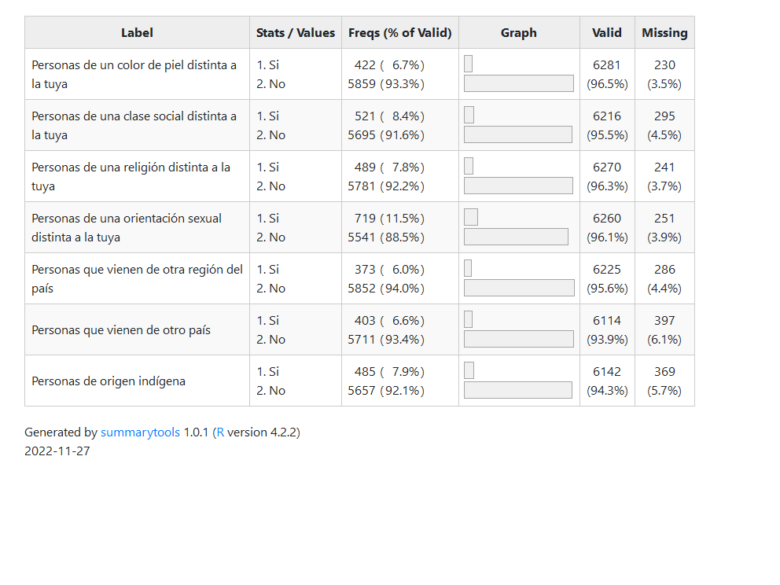

4.2 Variables
Con el fin de medir las actitudes de los y las estudiantes hacia la diversidad en sus vecindarios se utiliza la batería de preguntas del módulo “Tolerancia y Distancia Social” del cuestionario de estudiantes. Estas variables están medidas a partir de las preguntas que se presentan en la Tabla 4.1.
|  |
Para operacionalizar esta batería de preguntas, en primer lugar, se recodificarán los ítems de modo que 0 indique que no le gustaría que cada uno de los grupos viva en su vecindario y 1 indique que sí le gustaría. Luego, se construirá un índice sumativo a partir de la suma de los ítems para representar el grado de aceptación de todos los grupos. La distribución de este índice se puede observar en el Gráfico 4.1. El valor de Alpha de Cronbach de este índice es de 0.887

Figura 4.1: Indice aceptacion de la diversidad (estudiantes)
En relación con las variables independientes, estas se dividen en tres grupos: 1) variables de la familia, 2) variables de la escuela y 3) variables del territorio.
- Variables de la familia:
Los recursos socioeconómicos son representados a partir de dos variables:
Nivel educacional (Nivel más alto entre respondente y Cónyuge/pareja): Esta variable es reportada por apoderados. Es categórica y se representa en una escala de 1 a 10, siendo 10 el nivel educacional más alto posible.
Cantidad de libros en el hogar: Variable categórica que identifica la cantidad de libros en el hogar según el estudiante. Las categorías de respuesta son: 1) 0 a 10 libros; 2) 11 a 25 libros; 3) 26 a 100 libros; 4) 101 a 200 libros; y 5) 200 o más libros.
Actitudes de la familia:
- Aceptación de la diversidad de apoderados: se construye de la misma forma en que se operacionalizará la variable dependiente.
- Variables de la escuela
Conocimiento cívico: variable obtenida a partir de la prueba de conocimiento cívico aplicada a los y las estudiantes.
Percepción de apertura a la discusión en la sala de clases: Esta variable refiere a la percepción de los y las estudiantes sobre los espacios e instancias disponibles en la sala de clases para discutir y opinar sobre diversos temas de interés general. Se realizó un Análisis Factorial Exploratorio que permitió estimar puntajes factoriales a partir de 5 de los 6 ítems disponibles en la base de datos (Para más detalles ver Anexo)
Promedio de percepción de apertura a la discusión en la sala de clases: Variable construída a partir del promedio de percepción de apertura a la discusión en cada escuela. Esto permite identificar los espacios e instancias disponibles en la sala de clases para discutir y opinar sobre diversos temas de interés general a nivel de escuela.
Un resumen de estas variables se presenta en la Tabla 4.2.
 |
- Variables del territorio
Proporción de personas que se identifica con alguna etnia: Proporción de personas de la comuna que se identifica con pueblos originarios según el Censo 2017. Variable categórica agrupada en Bajo, Medio y Alto.
Proporción de población migrante: Proporción de inmigrantes en la comuna, a partir de datos del Censo 2017. Variable categórica agrupada en Bajo, Medio y Alto
Promedio de escolaridad: Escolaridad promedio de la comuna, según datos del Censo 2017. Esta variable posee un rango de 6.9 a 11.2.
Un resumen de estas variables se muestran en la Tabla 4.3